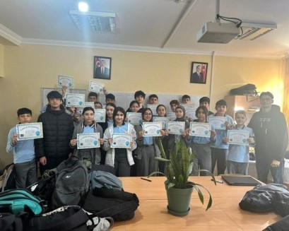
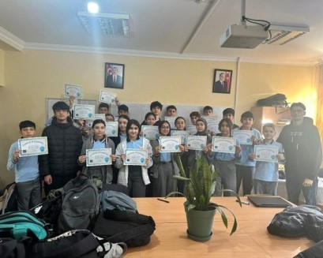
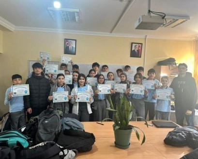

Photos from Event
★
 


The event called “The Hour of Code” was held at school No. 204 on the 5th of November 4 from 8:40 AM till 9:40 AM with 22 participants. During the event participants were given to solve the classic maze puzzle which consisted of 20 problems. Most of the participants were familiar with programming, however some of them happened to progress quickly throughout the puzzles. Participants that were struggling with some of the puzzles were assisted by our group. After completing the puzzles each participant received a certificate for completing the hour of code.

| Team Member | Contribution to the Project and Report | Estimated % |
|---|---|---|
| Rauf Asadli | Found the school, introduced ADA University, gave information about algorithms and Hour of Code, answered students’ questions, and helped them. Helped to prepare the report. | 32% |
| Aydin Guliyev | Gave information about algorithms and Hour of Code, answered students’ questions, and helped them. Recorded video. Helped to prepare the report for Bonus 2. | 30% |
| Yavar Jafarli | Gave information about algorithms and Hour of Code, answered students’ questions, and helped them. Took photos and helped to make videos. | 28% |
| Gunel Hajiyeva | Did not participate in school because of health issues. Helped to prepare the report for Bonus 2. | 10% |